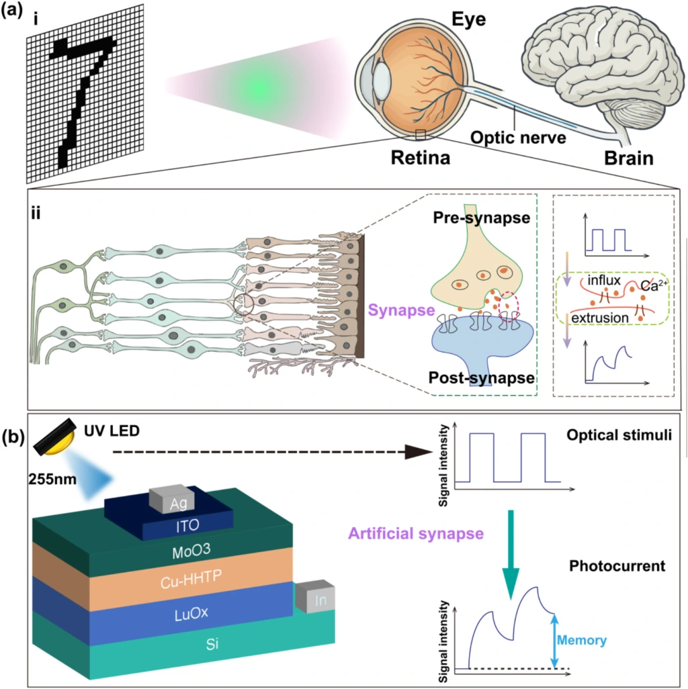
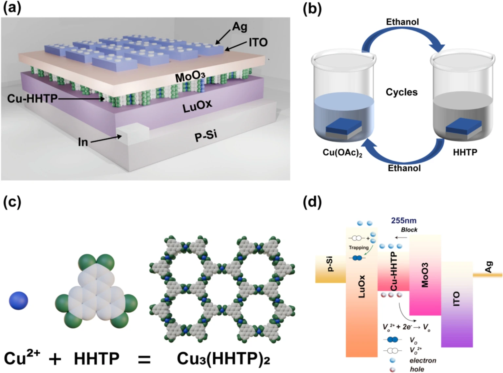
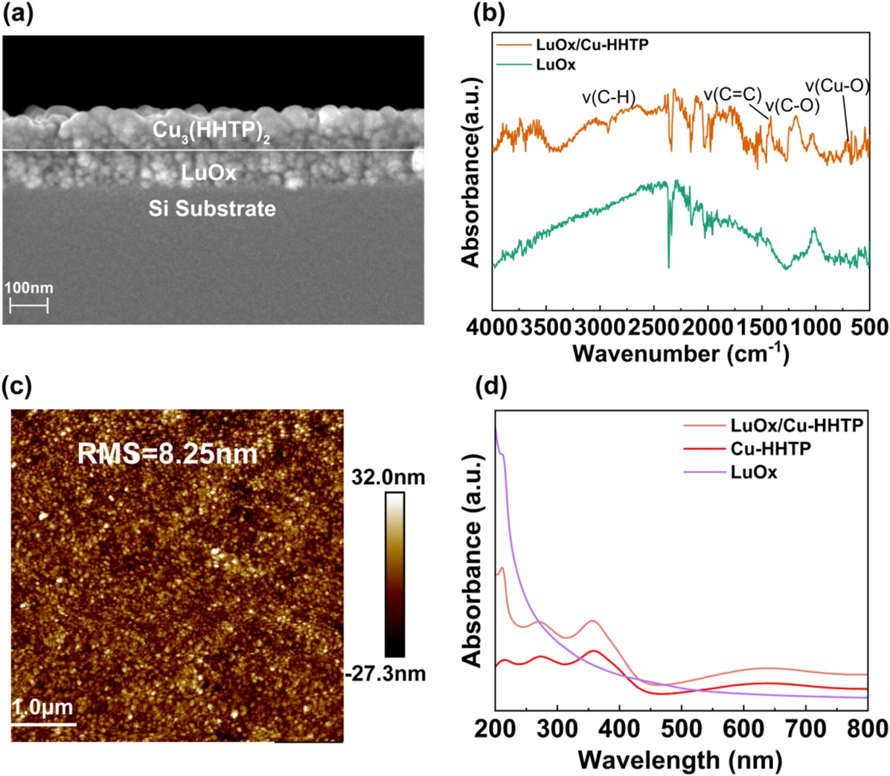
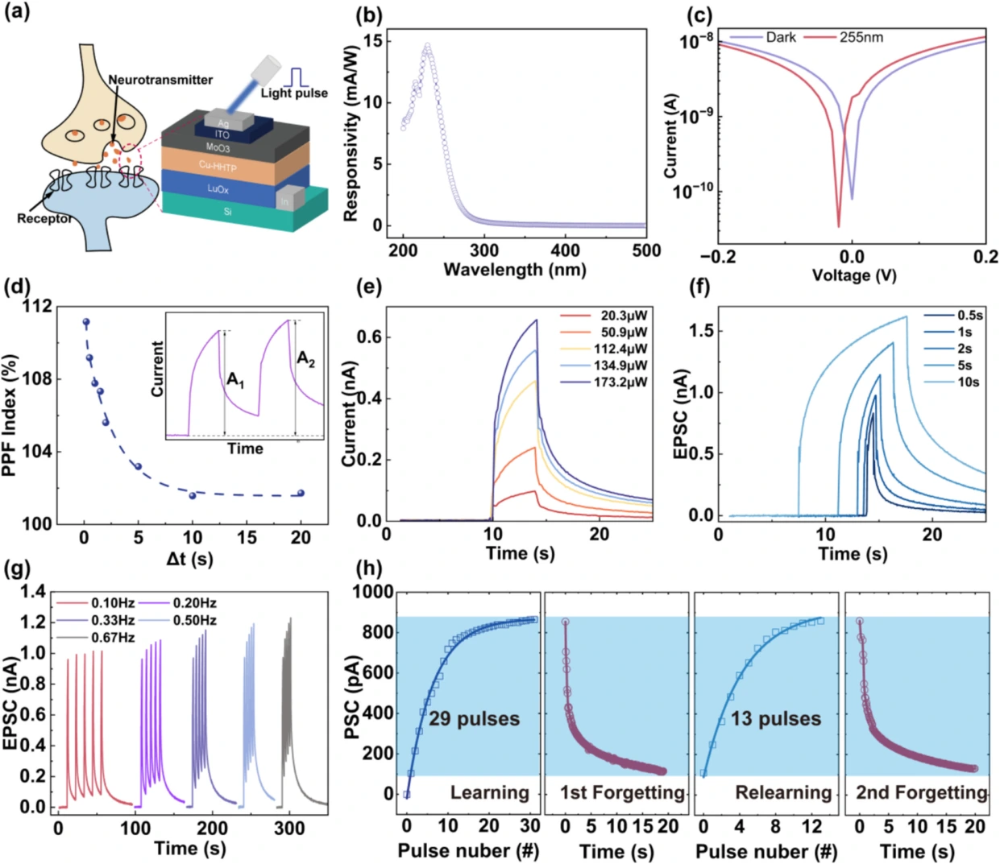
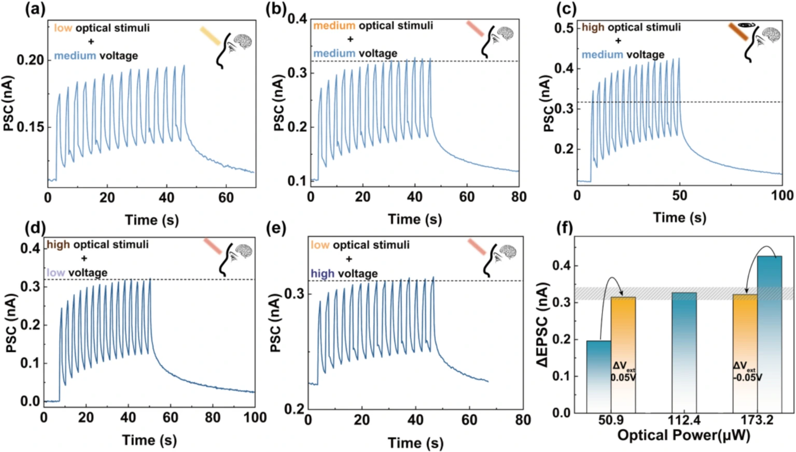
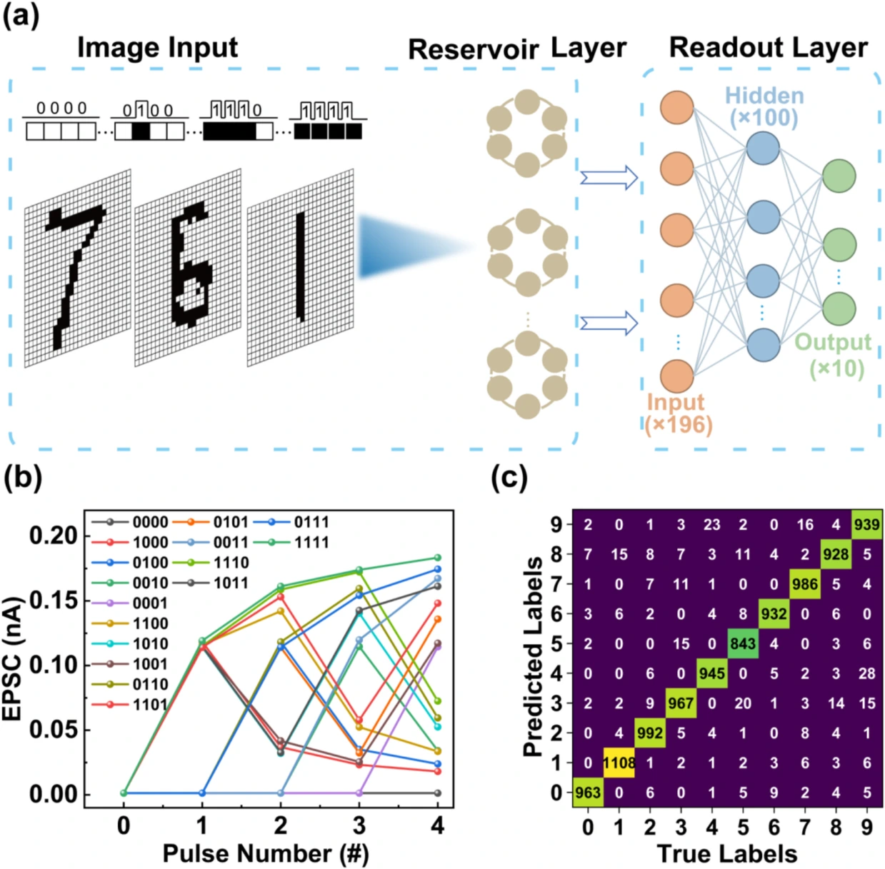

界面工程驱动的光突触：
从光记忆到感内储备池计算
为什么要让光探测器拥有记忆？
传统系统通常把光探测、数据存储和计算分配给不同模块，信息需要在模块之间反复传输。光电突触则利用器件在光刺激之后的缓慢恢复，使瞬时光信号留下时间痕迹：电流不仅反映当前输入，也受到先前刺激的影响。这种动态响应可以作为视觉预处理和时序特征提取的基础。
论文借鉴视网膜中的感光与突触传递过程，以光脉冲作为输入，以突触电流作为输出。研究重点是让光生电荷产生、分离、输运与缓慢恢复相互配合，而不是单纯追求更大的瞬时光电流。

MoO₃ 如何把材料功能连接起来？
器件主体由 p-Si / LuOₓ / Cu₃(HHTP)₂ / MoO₃ / ITO 构成，配合 Ag 顶电极和 In 底部接触。LuOₓ 提供氧化物缺陷相关的慢动力学；二维共轭 MOF Cu₃(HHTP)₂ 利用有序配位网络和 π 共轭结构参与电荷输运；ITO 提供透光导电窗口。
超薄 MoO₃ 位于 Cu₃(HHTP)₂ 与 ITO 之间。作者将其作用归因于高功函数引起的界面电荷转移与空穴积累，以及能级匹配和载流子输运的改善。与未引入 MoO₃ 的对照器件相比，改性器件在连续光刺激下表现出更明显的电流增强和成对脉冲易化，说明界面设计改变了电荷的动态响应。

截面 SEM、红外光谱、AFM 和吸收光谱共同用于检查异质结结构、化学配位、表面形貌与光学性质，为后续器件响应的分析提供材料依据。

关灯之后，为什么电流不会立即消失？
论文将持续光电导与 LuOₓ 的氧空位光电离、缺陷周围晶格弛豫及电荷俘获过程联系起来。紫外刺激改变缺陷电荷状态并产生自由载流子；晶格弛豫形成的亚稳态与恢复能垒，使关灯后的电荷恢复具有较长时间尺度。异质结分离和界面调控进一步影响复合与输运，从而形成电流的缓慢衰减。
当第二个脉冲到来时，第一个脉冲留下的电荷状态尚未完全恢复，第二次电流峰值就可能更高，这对应成对脉冲易化（PPF）。脉冲间隔增大后，残留影响减弱，PPF 指数随之下降。改变光强和脉宽，也能调节响应幅值与保持时间；其中，频率依赖实验主要体现短时动态的累积，不能仅凭峰值增长就判断形成长期记忆。
在“学习—遗忘—再学习”实验中，首次刺激用了 29 个脉冲达到目标权重，再学习仅需 13 个脉冲，并且第二次遗忘过程更缓慢。它展示的是器件对刺激历史的依赖，为模拟记忆巩固提供实验例证。

让不同光强的响应回到合适范围
作者设定 0.32 nA 电流阈值，用于模拟视觉感知的参考水平。在相同偏压下，弱光响应低于阈值，强光响应则超过阈值；通过提高弱光条件下的偏压，或降低强光条件下的偏压，电流可以调回阈值附近。
这种行为体现了光生载流子密度与偏压调节输运势垒的协同作用，类似瞳孔对明暗变化的调节。实验中的偏压由外部调整，因此它是光适应功能的器件级模拟，尚不等于已经集成了自主闭环控制的人工瞳孔系统。

16 种物理状态如何用于数字识别？
MNIST 图像包含 28 × 28 个像素。论文先将图像二值化，再把展平后的 784 个像素分成 196 组，每组包含 4 bit。4 bit 一共有 16 种输入模式，分别对应器件实验提取的电流或电导状态。利用这些状态映射，每张图像形成 196 维的模拟响应特征。
随后用这些特征训练软件读出层，完成数字分类，论文报告总体准确率为 94.10%。这里的验证结合了器件实测状态与计算机上的映射和读出层训练，并非已经制成完整的 196 节点硬件阵列。其价值在于展示：光突触的非线性和历史依赖响应，可以转化为可用于识别的计算特征。

从界面优化走向感知与计算融合
这项工作的关键是把材料选择、界面能级调控和计算任务连接起来：MoO₃ 改善界面输运，缺陷与异质结动态产生可调的光记忆，器件响应再用于构建识别特征。未来进一步走向集成应用，还需要考虑阵列一致性、多级输入编码以及读出和控制电路的实现。
Interface-engineered LuOₓ/Cu₃(HHTP)₂ heterojunction with MoO₃ interlayer for high-performance artificial optoelectronic synapses and in-sensor computing
Yutao Xiong, Zhengdong Jiang, Peicheng Jiao, Mingke Yu, Xiang Zhang, Hong Wang, Zhiqun Lin, Mengye Wang, Yanghui Liu.
Chemical Engineering Journal 531 (2026), 174194.